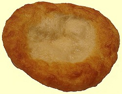
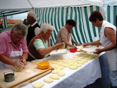
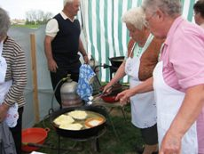
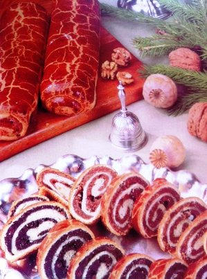
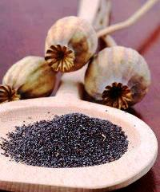

|
Kochrezepte
|
|
|
|
|
|

|
|
|
|
|
|
|
| |
| |
|
|
| |
| |
|
|
|
|
|
|
| |
|
|
|
|
|
|
|
|
|
| |
|
|
| |
|
| Lángos,
Beigli und
Kürtöskalács |
|
Im Schwabenland weit verbreitet ist Küchle, aber wer weiß
schon in Deutschland, dass dieser im Fett gebackener Hefeteigkuchen, den die Ungarn den Touristen
fladenförmig so
herzlich gern als ihre Nationalspeise "Lángos" zum Probieren
aufschwätzen wollen, in der fränkischen Schweiz schon seit dem
Mittelalter ein flachgedrückter Nürnberger Krapfen und im Schwabenland
heißt? Lángos ist heute in Ungarn viel mehr
bekannt, als Knieküchle in Deutschland. - Die Rezeptur des Nürnberger
Krapfens machte einen Bogen über Berlin, wo man daraus den
Berliner Krapfen erkor, der auch Berliner Pfannkuchen oder
einfach nur Berliner genannt und mit Marmelade gefüllt wird.
Küchle und den Berliner Pfannkuchen haben die
Donauschwaben in der neuen Heimat eingebürgert. Nur weil die
Ungarn beide Wörter nicht aussprechen können, erfand man Fánk
aus Pfannkuchen und Küchle wurde als Lángos übersetzt. |
 |
| |
Der Nürnberger Krapfen wird im Nürnberger Land traditionell
von Frauen zubereitet, aber ganz clever. Sie überlassen die
harte Arbeit den Männern, die den Teig sitzend übers Knie auf
der Lederhose zum Fladen kneten und so bleibt die Mitte immer
dünn. Knieküchle hat viele Namen, vom Aussehen her stammt eine
weitere Bezeichnung hinzu als Ausgezogene. Wir kennen folgende
Bezeichnungen für Küchle:
Ausgezogene, Kiachle, Küchle, Knieküchle, Nürnberger Krapfen,
Schmalzgebäck.
Während
Knieküchle über die
Grenzen hinweg der Lángos in Ungarn mit verschiedenen Köstlichkeiten
belegt werden kann, angefangen von gesalzener Knoblauchtunke
über Marmelade bis zu den verschiedenen Pizzabelägen, Knieküchle
wird in Bayern wie eh und je
mit Puderzucker bestreut wie Krapfen und heute traditionell zu Fasching und sonstigen Feierlichkeiten
zubereitet, wie das folgende Video zeigt: |
|
|
|
| |
| |
| |
Dass man den Nürnberger Krapfen auch ohne
Lederhose kneten kann, beweist der Siegeszug dieser
fränkischen Landesspezialität in Ungarn, wo Lángos ein reines
Frauenprodukt ist und dessen Produktion Sie an einem
ungarischen Jahrmarkt an den folgenden Bildern sehen:
|
|
 |
|
Kirmesbäckerei in Ungarn
- Bilderquelle:
|
Die wenigsten haben
davon je gehört, aber südlich von Rosenheim oben im
Wendelsteingebirge kennen die Kuhbauer
(sprich: Kiachä). Das
Rezept und die Zutaten zum Kiachle sind mit "Lángos pur"
(siehe weiter unten) absolut identisch.
Bei
den Kuhbauern kommt es in erster Linie auf die Verwendung von
Milchprodukten, wie Milch
und Quark an. Kiachle wird, im Gegensatz zum Lángos pur im Ofen
in handtellergroßen Stücken gebacken und als Fladenbrot, z.B. zur Gemüsesuppe gegessen.
Die Bezeichnung Kiachle
stammt wahrscheinlich aus der alten indogermanischen Heimat im heutigen
Länderdreieck Indien, Pakistan und Afghanistan, wo er heute
genauso bekannt ist, wie bei den Kuhbauern im
Wendelsteingebiet.
Sprachwissenschaftler fanden heraus, dass Kiachle heute in
Pakistan einen dialektartig mit Kiachä vergleichbar
ausgesprochene
Bezeichnung hat. Der Ursprung von Kiachle wird daher in der
alten indogermanischen Heimat vermutet.
|
Der Nürnberger Krapfen
bzw. Knieküchle hat seinen Weg zuerst nach
Berlin gebahnt und dort entwickelte sich die gleiche, jedoch
gezuckerte Rezeptur zum Berliner Pfannkuchen, der anderswo
schlicht nur Krapfen, Berliner- oder Weihnachtskrapfen genannt
wird. Der Berliner Pfannkuchen bzw. Berliner Krapfen wird in
Ungarn schlicht nur Fánk genannt, weil mit ungarischer Zunge
Pfannkuchen kaum auszusprechen ist.
Warum der
Weihnachtskrapfen in Ungarn von den Donauschwaben traditionell
zu Ostern aufgetischt wird, dafür können wir nur religiöse
Gründe ausdenken.
Warum der Krapfen in Ungarn Lángos
(=flammig) bezeichnet wird, das kann man nur vermuten,
weil das mit dem heißen Fett zu tun haben könnte, indem Lángos
gebacken wird - und Lángos nur heiß serviert
schmeckt.
Knieküchle im Schwabenland und Nürnberger Krapfen aus dem
Frankenland kommen meistens aus dem Backofen, mancherorts
werden sie im Fett gebacken - ganz ähnlich, wie der Berliner
Krapfen - und werden anschließend mit Puderzucker überstreut. Lángos in Ungarn wurde früher ausschließlich mit einer
Knoblauchtunke bestrichen und kräftig gesalzen serviert - bis
die DDR-Rucksacktouristen mit ihren ungewöhnlichen Wünschen
die Lángosbuden nach Berliner Vorbild reformierten.
|
Übrigens: was die Ungarn
nicht vorstellen können - ihre vermeidlich ungarische
Nationalspezialität wird in kanadischen Imbissbuden im Winter
von den Indianern als ihre eigene Spezialität angeboten und
ebenso von ihren seit Jahrtausenden getrennt lebenden
Verwandten in Sibirien. - Da bleibt nicht viel Raum für
Erklärungen über den Ursprung dieser "ungarischen
Landesspezialität".
Lángos galt schon
immer als Armutszeugnis und war in Ungarn
praktisch unbekannt. Erst als die nach 1956 zugelassenen privaten Lángosbuden um
den Plattensee herum in der sozialistischen Armutsära sich als
Goldgruben erwiesen, machte Lángos seinen Siegeszug. Zuerst
berichteten die Balaton-Urlauber von den Lángosbuden, dann
fragten die meisten, was ist Lángos überhaupt? Das Volk war
arm und der Lángos billig, so brachte die Masse der
Plattensee-Wochenendausflügler und DDR-Rucksacktouristen in den
wenigen Sommermonaten das Geschäft.
|
Als der Plattensee sich in den 1960er Jahren zum Ziel des
jugendlichen Massentourismus entwickelte, schossen die Lángos-Verkaufsstellen
aus dem Boden, wie Pilze nach jedem Regen, weil sie die
Goldquelle für Ihre Betreiber waren. Die einfache Arbeit bei
der Herstellung aus billigen Zutaten ist eine ansehnliche
Schau, zugleich etwas umständlich in der eigenen Küche. - Ein
weiteres Armutszeugnis lieferten die meist jungen
DDR-Rucksacktouristen (mit Konservendosen im Pack) etwa ab
Anfang der 1960er Jahre am Balaton (Plattensee). Sie verfügten
bekanntlich über eine geringe, stark regulierte Menge an
Fremdwährung für die Auslandsreise und nur das wenigste davon
konnten sie für die Ernährung in Ungarn ausgeben, damit genug
Geld für die in der DDR begehrten, aber dort wegen
Devisenmangel nicht erhältlichen Jeanshosen aus dem Westen
übrigblieb. Oft nahm man Opa und Oma im Zug bis Prag mit, sie
fuhren zurück, aber ihre Devisen brauchten die Jugendlichen in
Ungarn. Der Kleidermarkt von Siófok am Balaton war das
Geheimziel, dort kannte man alle Wünsche der Ostdeutschen. Die
Jeans mussten unbedingt von der Marke Wrangler oder Levy
Strauss sein, das verlangte damals der Modetrend. Wer kenn
diese Marken heute noch?
Warmes Essen und billig war nur der Lángos in den Buden am
Plattensee und dort staunten die Ungarn, wie die Ostdeutschen
statt Knoblauchtunke Marmelade auf den Lángos schmierten - zum Entsetzen der Ungarn
- und so wurde Lángos zu einer ergiebigen, kalorienreichen und
billigen Mahlzeit. Das war der Anfang vom Ende der
ursprünglichen Lángos-Varianten in Ungarn. Seit eh und je kräftig
gesalzen und höchstens mit einer Knoblauchtunke bestrichen,
gibt es heute laufend neue Ideen für den Belag. Vorbei sind
die Zeiten mit billigem Marmelade, immer
öfter wird Lángos mit Sauerrahm, Käse und Schinken belegt,
neuerdings machen Ketchup und verschiedene Pizzasaucen sogar
auf mexikanische Art das Rennen – die Phantasie in der Küche
ist ja grenzenlos und die neuen Beläge stoßen auf offene Ohren
bei den Betreibern der Lángos-Verkaufsstellen,
weil sie
bei wenig Arbeit wesentlich größere Einnahmen
ermöglichen als Lángos nach Originalrezeptur.
|
|
Es gibt drei
Lángos-Varianten aus folgenden Zutaten: |
-
Lángos pur - aus
Weizenmehl -
500 g Mehl, 40 g Frischhefe oder 1 Pkg. Trockenhefe, 100
ml Sauerrahm, 250 ml Milch,
1/2 TL Salz, 1 TL Zucker - und 1 Liter Sonnenblumenöl zum
Frittieren. Mit einer Knoblauchtunke
bestrichen und kräftig gesalzen - oder mit Puderzucker
bestreut, wie Knieküchle im Schwabenland...
Die Zubereitung der Knoblauchtunke: Einige Knoblauchzehen
fein hacken, in einem Glas mit kochendem Wasser
überschwemmen, über Nacht ziehen lassen. Vor dem Verzehr
den Lángos mit der Knoblauchtunke bestreichen und kräftig
salzen - möglichst mit Steinsalz.
-
Kartoffel-Lángos
- dazu mischt man Kartoffelmehl in einem Verhältnis von 1
zu 3 zum Weizenmehl (100
g Kartoffelmehl zu 300 g Weizenmehl). Statt Kartoffelmehl
wird jedoch meistens ein Kartoffelbrei zubereitet.
Wie vor, auch diese Lángos-Variante
wird mit einer Knoblauchtunke bestrichen und kräftig
gesalzen..
-
Kraut-Lángos - dazu
mischt man sehr fein geraspelten, kandierten Weißkohl zum
Weizenmehl
(100 g Weißkohl zu 300 g Weizenmehl).
Weißkohl zerreiben und in einer Pfanne im heißen Öl
glasig werden lassen, mit wenig Salz und Zucker
abschmecken. Zum Mehl mischen, wie oben beschrieben gehen
lassen und backen.
Vor dem Verzehr mit Puderzucker bestreuen. Diese Lángos-Variante
ist besonders arbeitsintensiv, lässt sich mit teuren
Zutaten nicht belegen, ist billig und wird daher an den
Verkaufsständen selten angeboten...
|
An der Zubereitung der
drei Lángos-Varianten hat sich bis heute nichts geändert,
dafür aber das, womit man den Hefeteigfladen belegt, und das
ist eine gewaltige Entwicklung seit Anfang der 1960er Jahre,
die Lángos von heute auf den ersten Blick mit Pizza
vergleichen lässt.
|
Die Zubereitung von Kartoffel-Lángos von
einem Fachmann unter häuslichen Verhältnissen sehen Sie im
folgenden Video auf Englisch kommentiert und unten beschrieben:
|
|
|
|
|
Zutaten:
siehe oben unter den drei Langosch-Varianten die
Kartoffel-Mischung.
Zubereitung: Alle Zutaten sollten Zimmertemperatur
haben. Das Mehl in eine Rührschüssel sieben, die Hefe in der
lauwarmen Milch auflösen. Alle Zutaten dazugeben und einen
Teig kneten. Unterschiedliche Mehlsorten binden
unterschiedlich viel Flüssigkeit. Nach Bedarf in kleinen
Mengen etwas Mehl dazu mischen, wenn der Teig zu weich und
klebrig ist. Der Teig ist fertig, wenn er sich vom Boden
leicht löst, glatt, elastisch und geschmeidig ist. Zudecken
und an einen warmen Ort 30 Minuten ruhen lassen. (Der Teig
kann auch einige Stunden ruhen, sollte dann zwischendurch mal
durchgeknetet werden). Man kann den Teig in einem Beutel
mehrere Tage lang im Kühlschrank aufbewahren und Stück für
Stück je nach Bedarf verbrauchen.
In einer großen Pfanne oder Topf soviel Öl auf rd. 180 °C
(350° F) erhitzen. Die Hände mit etwas Speiseöl benetzen, den
Teig portionieren (ergibt etwa 8 große Langosch), wie eine
kleine Pizza auf dem Nudelbrett flachrollen und im heißen Fett
beide Seiten auf goldgelb frittieren - dann schmeckt er am
besten. Im Fett versinkt zwar der Teig zuerst, kommt aber bald
auf die Oberfläche. Dann ist der Langosch eigentlich schon
fertig, sollte aber goldgelb werden Auf Küchenpapier
abtrocknen und unbedingt heiß servieren.
|
|
Ungarischer Baumkuchen
/ Kürtöskalács |
Nachdem die Siebenbürger Sachsen aus ihrer Heimat vom
rumänischen Diktator Ceauşescu weitgehend vertrieben und vom
Außenminister H.D. Genscher gekauft wurden, behaupten nun die
Sekler (ungarischsprachige
Bevölkerung in Siebenbürgen), der Kürtöskalács, eine Art Baumkuchen wäre ihre
Erfindung.
Leider hinkt diese Geschichte, denn die Sekler den
Ursprung des ungarischen Kürtöskalács im südlichen
Siebenbürgen dort vermuten bei Kronstadt (heute Braşov), wo
die Bevölkerung bis zuletzt deutschstämmig war und nicht
ungarisch, bevor die Gegend im Jahre 1920 an Rumänien
anschließet.
Auch die Legende über den
Zeitpunkt der Erfindung von Kürtöskalács bei Kronstadt während
des Tatarensturmes im Jahre 1240 stimmt mit dem Zeitpunkt der
Ansiedlung der Siebenbürger Sachsen überein, die den Ruf des
ungarischen Königs Andreas II in den Jahren ab 1211 folgten. - Wie auch immer,
beide Kuchen sind ähnlich und sie werden um die Weihnachtszeit
aufgetischt. Kürtöskalács ist eine weniger arbeitsintensive und
weniger reichhaltige Variante des Baumkuchens.
Früher kaum bekannt in Ungarn, seit der vollständigen
Grenzöffnung zwischen Ungarn und Rumänien erobern die
Kürtöskalács-Stände die Jahrmärkte in Ungarn. - Wie man Kürtöskalács unter
häuslichen Verhältnissen zubereiten kann, zeigt das folgende
Video von Miele Kochstudio (hier auf Ungarisch):
|
|
|
| |
| |
|
Beugen bzw. Wiener
Stollen / Beigli |
|
 |
Eine echte Kalorienbombe, die von den Donauschwaben
traditionell zu Weihnachten und Ostern aufgetischt wird
und immer mehr auch bei den Ungarn auf den
Weihnachtstisch gehört. Das Wort Beigli ist
donauschwäbisch und entstammt aus Beugen, das im 19.
Jahrhundert noch allgemein gebräuchlich für Kuchen war.
Beigli ist identisch mit dem Wiener Weihnachtsstollen,
der dort unter verschiedenen Namen bezeichnet und oft
mit einer Schokoladenlasur überzogen wird.
Während die österreichische Weihnachtsstolle
unterschiedlich gefüllt werden kann in Anlehnung an die
Nürnberger und Dresdner Stollen bzw. Striezel, in Ungarn
kommen grundsätzlich Mohn oder Walnuss, gelegentlich
auch Kakao in Frage. Die Füllung wird meistens mit
Rosinen und Aprikosenmarmelade bereichert, neulich
machen Marzipanflocken die Runde. In Ungarn ist die
Oberflächenbeschichtung immer eine Eierlasur.
Übrigens: Der Wiener Beugen hat mit Beigel oder
Bagel (gelochter Berliner bzw. doughnut) schlesischen
Ursprungs nichts zu tun,
trotz andersartiger Behauptungen der deutschsprachigen
Ausgabe von Wissenspantscher Wikipedia. |
Zutaten für 4 bis 6
Stollen: 600 g Strudelmehl, 250 g Butter oder
Margarin (es reicht auch die Hälfte, dann wird der
Teig luftig-locker-leichter nach dem Backvorgang), 150
g Zucker, 2 Eier, 1 Hefewürfel, 0,2 l Sauerrahm oder
Schmand, 1/2 TL Salz.
Zutaten für die Mohnfüllung: 400 g
weichgemahlener Mohn (in Geschäften bekommt man nur
geknackte Mohnkörner, daher selbst mahlen! - über Mohn
und Opiate lesen Sie
), 200
g Zucker, soviel Wasser, dass die Mischung
streichfähig ist. Wenn man die Füllmasse mit
Aprikosenmarmelade anreichert, sollte man weniger
Zucker verwenden.
Zutaten für die Walnussfüllung: 400 g gemahlene
Walnuss, 200 g Zucker, soviel Wasser, dass die
Mischung streichfähig ist, 1 handvoll Rosinen, 2-3
Stamperl Rum oder 1-2 Ampullen Rumaroma.
Zutaten für die Glasur:
Das Eigelb von 2 Eiern. |
 |
Die Zubereitung von Beigli
demonstriert das folgende Video:
|
|
|
| |
Zubereitung: Die
Zutaten für den Teig mit soviel Sauerrahm verkneten, dass der
Strudelteig hart wird. In 4 bis 6 Stücke teilen, an einer
lauwarmen Stelle eine Stunde lang zugedeckt aufgehen lassen.
Auf dem Knetbrett backblechlange rechteckige Stücke
ausbreiten, füllen und aufrollen und auf das Backblech
nebeneinander anordnen. Zwischen den Stollen sollte ein
Zwischenraum bleiben, weil sie im Backofen aufgehen. In dem
auf 180°C vorgewärmten Backofen max. 40 Minuten lang, im nicht
vorgewärmten Elektroofen ca. 50 Minuten lang backen.
|
|
|
|
|
Das Rezept der Wiener Stolle bzw. Beigli stammt
bekanntlich aus Österreich und so
ist es kein Wunder, wenn auch die Polen von Schlesien
ausgehend das Rezept kennen. Die Zubereitung aller Rezepte variiert von
Haus zu Haus, so sieht die hir vorgeführte polnische
Variante ein bisschen anders aus. Das folgende Video zeigt zudem, wie man Beigli
auch ohne Nussmühle (Bild links) und Mohnmühle (Bild rechts)
zubereiten kann.
In der Füllung der polnischen
Variante vermissen wir den frisch gemahlenen Geschmack der
Mohnkörner und die in Ungarn beliebte Aprikosenmarmelade! |
 |
|
|
Wir zeigen das folgende Video, weil es eine sehr gute
Demonstration der Herstellung von Beigli in Deutscher Sprache
ist. Manche behaupten, nach dem Kochen sei der Mohn
bekömmlicher und wer Milch meidet,
kann den Mohn genauso im Wasser kochen. Das mag stimmen, aber
der wahre Grund für das Kochen ist, dass der Mohn nur frisch
geerntet (etwa Ende August) bis Weihnachten schmeckt und
spätestens 6 Monate nach der Ernte fadig wird. So
schmeckt der Mohnstollen zu Weinachten ideal, aber zu Ostern
ist die Frische schon vergangen und seine Eignung zum Genießen
im gemahlenen Zustand ist dann zumindest kritisch. Das Kochen
kommt der industriellen Verwertung entgegen und verlängert die
Haltbarkeit von Blaumohn - zumindest scheinbar. Während der
natürlichen Austrocknung der Mohnkörner vergeht zwar der
Mohngeschmack, kann aber durch die eingesogene Kochflüssigkeit
etwas wiederbelebt werden kann. Dem gleichen Zweck dient die
Zugabe von Eiweißschnee in der polnischen Mohnfüllung.
|
|
|
|
|
| |
| |
Ungarn-Tourist Team

|
| |
 |
| |
|